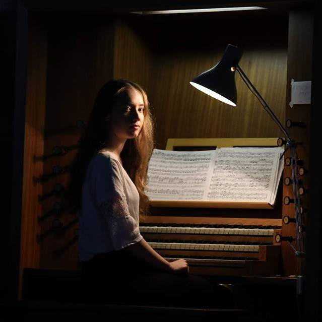

varhaník z Hronova

Anna Ester Chlebanová Petříková, původem z Hronova, začala hrát na varhany ve třinácti letech na ZUŠ v Hronově. V té době studovala na Jiráskově gymnáziu v Náchodě. V roce 2015 začala studium hry na varhany na konzervatoři Pardubice u prof. Rafaji. Konzervatoř a gymnázium studovala současně. Po maturitě v roce 2018 začala studium oboru Aplikovaná environmentální geologie na Přírodovědecké fakultě MUNI v Brně. V roce 2019 byla přijata na Hudební a taneční fakultu AMU v Praze, kde studovala u prof. Jaroslava Tůmy. Anna Ester koncertovala s orchestry, nejčastěji s FOK, a různými sbory. Během studia se účastnila několika kurzů. V roce 2021 úspěšně obhájila bakalářské státnice z geologie na MUNI a v roce 2024 složila bakalářské státnice z oboru varhany.
V současnosti studuje Aplikovanou geologii na Hornicko-geologické fakultě VŠB v Ostravě. Je chovatelkou ovcí a vášnivou čtenářkou klasické literatury. Její manžel, Pavol Chlebana, je překladatel a filozof.
Soli Deo Gloria
cyklus koncertů JS Bacha v transkripcích Andrewa Balia pro trubku a varhany
Debrecín 7.5.
Budapešť 9.5.
Brno 16.5.
Liberec 20.5.
Broumov 24.5.
Praha 25.5.